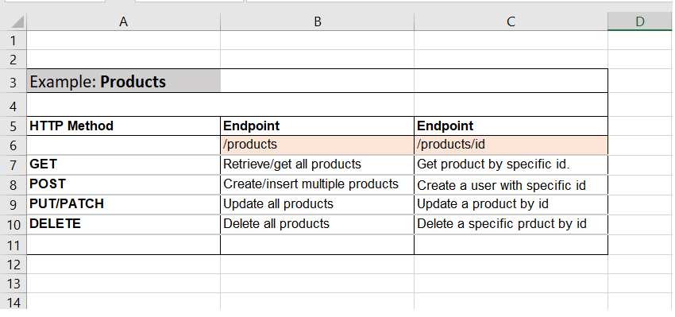
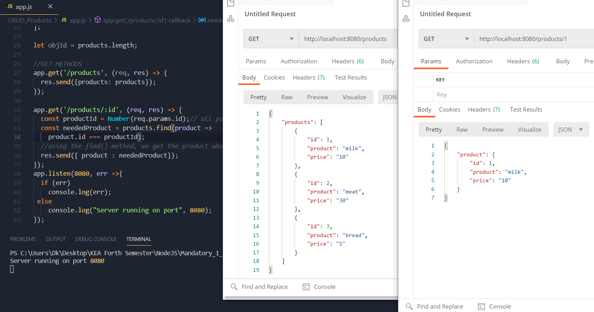
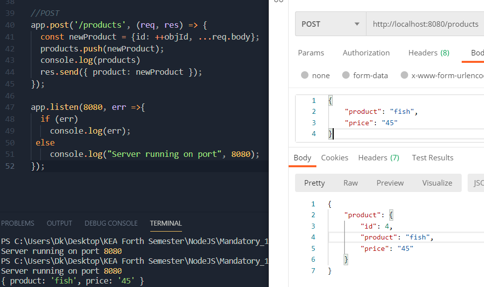
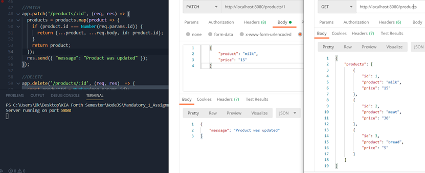
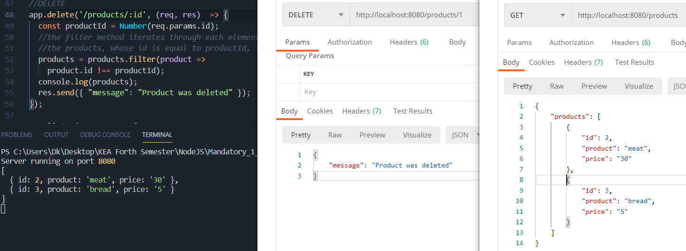

REST API
This time we will create a REST API to perform CRUD operations on resources. We will start from designing our API and then we will use Express when implementing it.

Anatomy of REST API
REST APIs are used to access and manipulate data using a common set of stateless operations. These operations are integral to the HTTP protocol and represent essential create, read, update, and delete (CRUD) functionality, although not in a clean one-to-one manner:
- GET (retrieve an set of resources or an individual resource)
- POST (create a resource or generally provide data)
- PUT (create or replace a resource)
- PATCH (update/modify a resource)
- DELETE (remove a resource)
Using these HTTP operations and a resource name as an address, we can build a REST API by creating an endpoint for each operation. And by implementing the pattern, we will have a stable and easily understandable foundation enabling us to evolve the code rapidly and maintain it afterward.
Designing a REST API
A good practice when designing a REST API is to create a list or table with HTTP methods and endpoints
For our project we will create a REST API for Products:
Implementing the REST API
First, let's create a new project, called CRUD_Products, with app.js and package.json with this initial code
We also need same test data to work with, so add the following code:
let products = [
{
id: 1,
product: "milk",
price: "10"
},
{
id: 2,
product: "meat",
price: "30"
},
{
id: 3,
product: "bread",
price: "5"
}
];
let objId = products.length; //objId will work as AUTO_INCREMENT to assign ids
We will implement the REST API by using the HTTP Methods:
-
GET
We will use GET request to get all the products or a single product:
//GET METHODS app.get('/products', (req, res) => { res.send({products: products}); }); app.get('/products/:id', (req, res) => { const productId = Number(req.params.id);// all path varaibles are String const neededProduct = products.find(product => product.id === productId); //using the find() method, we get the product whose id is equal to the one specified res.send({ product : neededProduct}); });We will test everything through Postman:
 -
POST
We will use GET request to create a new product from the data sent on request body:
//POST app.post('/products', (req, res) => { console.log(req.body); // we create a new object with property id and properties got from the request body const newProduct = {id: ++objId, ...req.body}; products.push(newProduct); console.log(products) res.send({ product: newProduct }); });In Postman we choose the POST method and create an JSON object in the Body part(by choosing: Body -> raw -> JSON):
 -
PATCH
We will use PATCH request to modify some properties of a existing product from the data sent on request body:
//PATCH app.patch('/products/:id', (req, res) => { products = products.map(product => { /*With map we can change the product objects. We iterate through each product and if its id corresponds to specified id, we create a new object which is populated with product properties, when updated with provided data and lastly the correct id is set (this acts as a securrity measure if the initial id is changed) The created product object is returned and saved into a new array */ if (product.id === Number(req.params.id)) { return {...product, ...req.body, id: product.id}; } /*If we didnt have the return statement, then for each iterated product, the new array would have a null value as no object is returned. With return statement, the products which dont comply with if-statement are also returned and saved into the new array */ return product; }); res.send({ "message": "Product was updated" }); });In Postman we choose the PATCH method with product's id and in the Body create an JSON object with modified data for that product:
 -
DELETE
We will use DELETE request to delete the specified product :
//DELETE app.delete('/products/:id', (req, res) => { console.log(req.params.id); const productId = Number(req.params.id); //filter method iterates through each element and whose id is not equal to productId, is added to array //the products, whose id is equal to productId, is filtered out(removed) products = products.filter(product => product.id !== productId); console.log(products); res.send({ "message": "Product was deleted" }); });In Postman we choose the DELETE method and specify the id of the product we want to delete:
